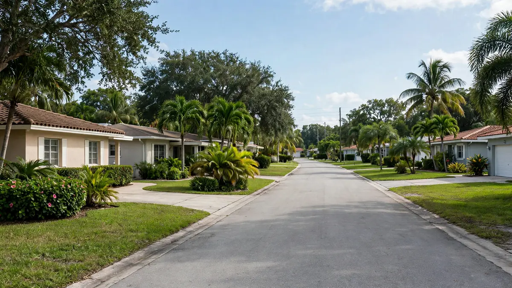

Emergency Water Cleanup in North Central Hollywood, Hollywood FL
ZIP Code: 33020

North Central Hollywood mixes apartments, small businesses, and mid-century homes along busy corridors. Hollywood Water Damage Experts provides emergency water cleanup for North Central Hollywood and ZIP 33020. We handle extraction, moisture mapping, structural drying, and clear documentation after leaks, floods, burst pipes, or sewage backups — for renters, owners, and businesses.
Water Emergencies We See in North Central Hollywood
This area's variety drives its water problems. Apartment buildings see supply-line failures and overflowing fixtures that affect multiple units; small commercial spaces deal with restroom backups and aging rooftop drainage; mid-century homes contend with original plumbing nearing the end of its service life. Heavy rain tests them all — flat roofs pond, gutters overflow, and ground-level units take on water first.
With renters, owners, landlords, and managers often involved in a single loss, clear documentation matters as much as fast drying. We respond to North Central Hollywood ready to map the full extent of moisture, communicate plainly about what we find, and produce records that work for everyone with a stake in the property.
What Local Water Cleanup Looks Like
We halt the source, confirm the space is safe, then extract standing water. Moisture meters then trace the spread through walls, ceilings, and floors — including into neighboring units when the building is multi-family. Drying equipment is placed by reading, monitored over the job, and verified dry before we finish.
Sewage and floodwater contamination means containment, removal of porous materials that cannot be sanitized, and thorough cleaning. Clean-water losses receive full structural drying with the same verification discipline. Photos and moisture logs accompany every job for insurance and property records.
Services Available for North Central Hollywood (33020)
Property owners in North Central Hollywood can request the full range of our Hollywood services, including:
- Emergency water extraction
- Flood cleanup
- Sewage backup cleanup
- Burst pipe cleanup
- Roof leak cleanup
- Structural drying
- Mold remediation support after water events
- Appliance leak cleanup
For the complete list, visit all water cleanup services. Neighborhood coverage for the rest of the city is listed on our service areas page. The main overview of water damage restoration in Hollywood, FL is on the homepage.
Insurance Documentation and Clear Communication
Many sudden water losses are claimed under homeowners or commercial policies. We do not decide coverage. What we provide is a clear record of conditions and work: photos, moisture readings, and a straightforward description of what was done. That information helps you and your adjuster understand the scope. If you need help understanding the next administrative step, we can point you to practical next actions without overpromising on claim outcomes.
How to Get Help in North Central Hollywood
Call (754) 294-7959 for 24/7 emergency response in North Central Hollywood and ZIP 33020. Tell us what you see, whether water is still flowing, and any safety concerns such as electrical panels near wet areas. A crew is dispatched with the equipment needed for extraction and drying. For non-emergency questions, the same number reaches the team during normal business windows.
Practical guides — what to do after water damage, how water categories work, and mold timing in Florida — are available on our blog.
Frequently Asked Questions — North Central Hollywood
I rent my apartment. Who should call you?
Either the tenant or the landlord can call. We document conditions clearly so responsibility and next steps are easy to sort out between parties.
The leak came from another unit. What happens?
We map moisture in every affected unit, dry the complete path, and document the origin and spread for all involved.
Do you handle small commercial spaces?
Yes — offices, shops, and food establishments. We plan drying around your hours where possible.
How do I know if my older home's pipes are at risk?
Frequent small leaks, discolored water, or low pressure can signal aging supply lines. A plumber can assess; if a failure happens, we handle the water damage.